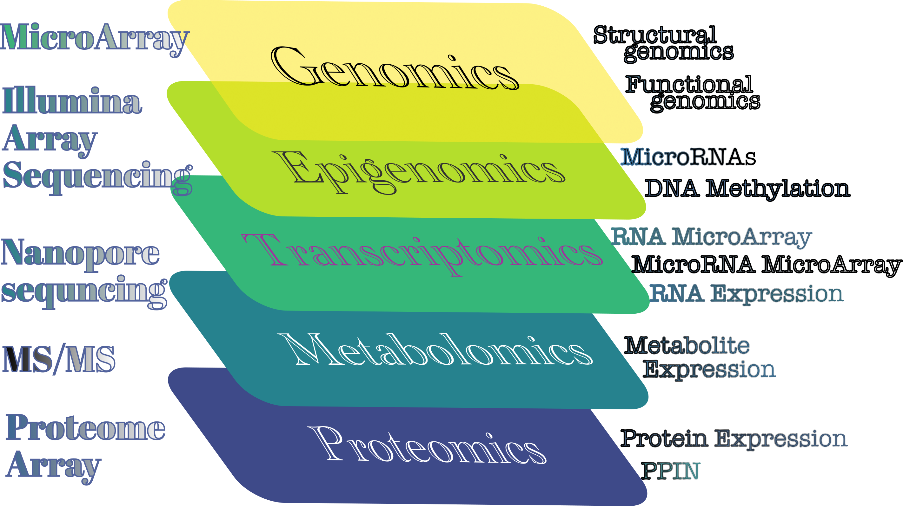

Experiences
Work Experience/s
Principal Research Engineer (2020/09 onwards)
Bioinformatics, Core Facility, Faculty of Medicine and Health Sciences, BKV, Linköping University, SwedenPostdoctoral Fellow (2017/06 – 2020/08)
Department of Clinical and Experimental Medicine, Linköping University, Sweden
Key Responsibilities - Computational analysis of whole genome (RRBS)/ array based (450K/850K) DNA methylation analysis from different participants in Sweden and Peru.
- Develop analysis pipelines to identify differential methylation patterns in different groups of dataset.
- Develop pipelines with unsupervised analyses like Multi-Dimensional Analysis (MDA), Principal Component Analysis (PCA), Component Analysis (CA), Multiple Factor Analysis (MFA) to reduce the dimensionality of data.
- Pipeline development to use supervised machine learning algorithms (LDA, GLMNET, RandomForest) to identify biosignature from the study.
- Develop analysis pipeline for transcriptome analysis.
- Use of MATLAB image processing to analyze live cell imaging.
Key Achievements - Extensive use of R language.
- Develop packages in R, notes on R Markdown.
- High performance computing analyses.
- Clustering computing with R and Shell.
- Senior Research Fellow (2014/01 – 2017/01)
DST-INSPIRE (Govt. of India), Bioinformatics Centre, Bose Institute, India
Key Responsibilities - Develop of analysis pipelines to identify different microRNAs (miRNAs) in human diseases and their roles in evolutionary perspective.
- Curation of databases to develop dataset to calculate the evolutionary rates in human and orthologs.
- Linux-based approach to search sequence homology.
- Use of different programming languages like Perl, Python to analyze dataset.
Key achievements - Extensive statistical software analyses with SPSS.
- Develop algorithm based on shell scripts
- Linux system maintenance
Junior Research Fellow (2012/01 – 2014/01)
DST-INSPIRE (Govt. of India), Bioinformatics Centre, Bose Institute, IndiaInstitute Fellow (2010/09 – 2012/01)
Bioinformatics Centre, Bose Institute, IndiaResearch Trainee (2009/07 – 2010/05)
National Institute of Plant Genome Research, New Delhi, India.
Area of Expertise
